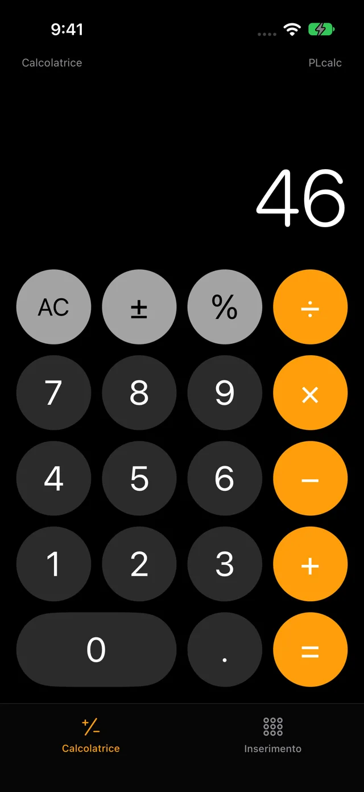
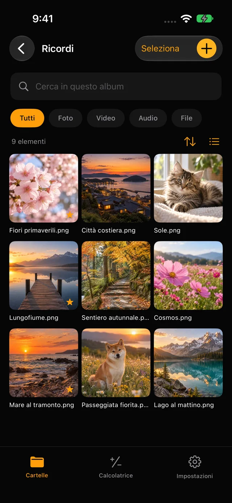
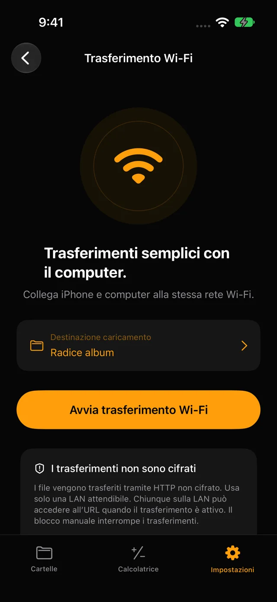

Cifratura sul dispositivo
File e nomi delle cartelle vengono salvati con cifratura. Usa un PIN di 4 cifre o una password di 8–64 caratteri.
iPhone & iPad · plcalc
Conserva foto, video e file cifrati su iPhone o iPad. Apri gli album con PIN o password. Non serve un account.
Vedi su App StoreiOS 17+ · iPadOS 17+


PHOTO LOCK CALCULATOR
File e nomi delle cartelle vengono salvati con cifratura. Usa un PIN di 4 cifre o una password di 8–64 caratteri.
Ordina foto, video, audio e documenti in sottocartelle. Cerca, aggiungi preferiti e recupera elementi dal cestino.
Collega i dispositivi allo stesso Wi-Fi e apri nel browser l’indirizzo mostrato nell’app. Scegli la cartella e carica i file.

01 / 02 / 03
Scegli e conferma un PIN o una password.
Apri l’album dalla scheda di immissione e aggiungi file con +.
Usa la scheda calcolatrice per i calcoli quotidiani.
PIN e password dimenticati non possono essere recuperati. Fai copie separate dei file importanti. La capacità dipende dallo spazio libero.
Il trasferimento Wi-Fi usa HTTP non cifrato. Usa una rete affidabile: i dispositivi sulla stessa LAN possono accedere all’album durante la condivisione. Il sistema può interrompere i trasferimenti in background.
Assistenza ↗